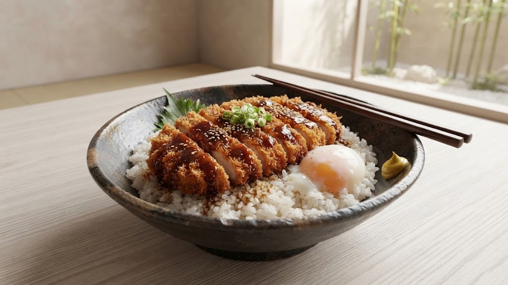
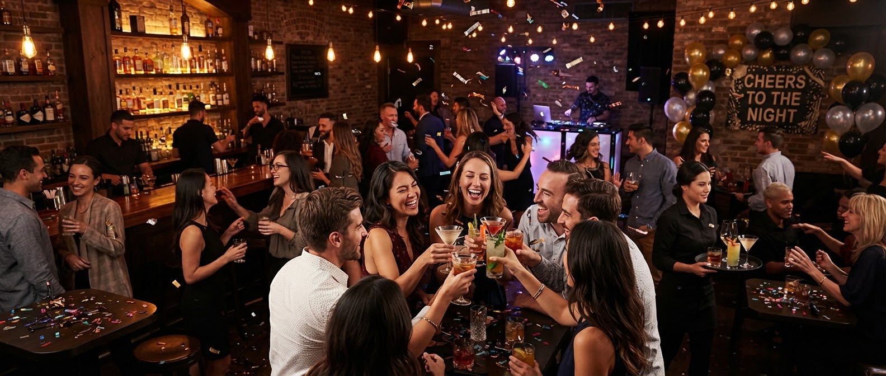
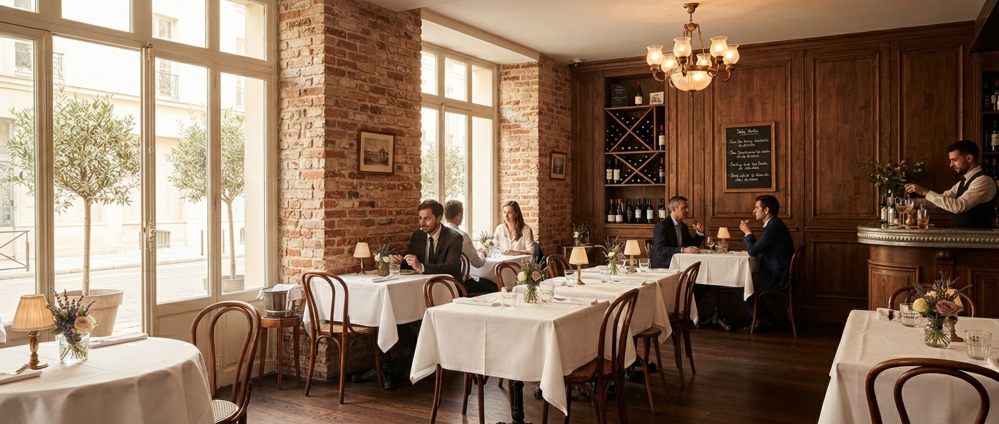
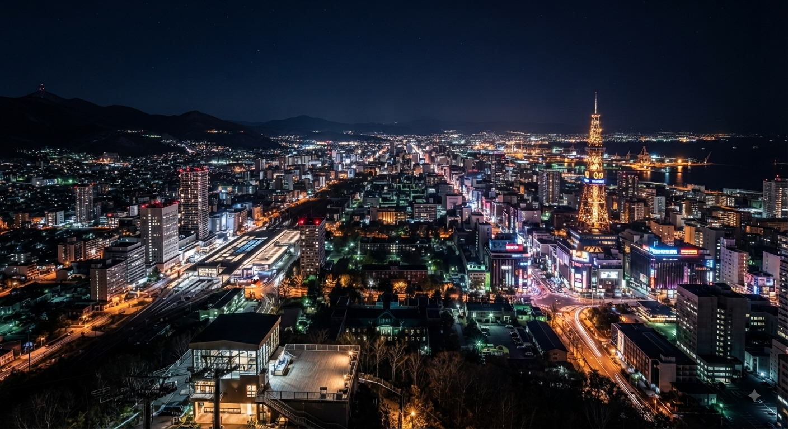

ビジネスランチ
迅速な提供とフリードリンクで、打ち合わせもスムーズに。

料理人生45年の集大成
レストラン G･greet（ジーグリート）
アクセス
2分
盛岡駅西口・
マリオス4F直結
満足度
95%
料理・サービスへの
満足度評価
貸切人数
60名
最大貸切人数・
マイク完備
SIGNATURE MENU
岩手・八幡平産「杜仲茶ポーク」の極上体験
料理長・中道が選び抜いた岩手ブランド豚。その旨みを引き立てるのは、長年継ぎ足された秘伝のソース。サクッとした食感の後に広がる肉汁とソースの芳醇な香りは、まさに至福の一時です。

OWNER CHEF STORY
1962年、岩手に生まれ。若くして調理の道を志した中道孝は、名だたるホテルや国内外のイタリア料理店で研鑽を積み、洋食の真髄を追求してきました。
「親しみやすく、かつ本物の味を。盛岡の空の下で、最高の一皿をお届けします。」
迅速な提供とフリードリンクで、打ち合わせもスムーズに。

最大60名。マイク・スクリーン完備で思い出に残る演出を。

レンガ調の温かい内装と、マリオス4階からの絶景が会話を弾ませます。

夜はロマンチックな夜景を。落ち着いた大人な雰囲気で至福の一時を。
駅直結の利便性をさらに高める、新しいサービスを企画中。
「G･greetの味をご自宅やオフィス、新幹線の中でも楽しみたい」そんな声にお応えして、特製ソースカツ丼やシェフ自慢の洋食をお弁当スタイルでご提供予定です。事前予約で待ち時間なしのお受け取りが可能になります。
準備中（今春スタート予定）
電車の待ち時間や、ちょっとしたお仕事・お打ち合わせの合間に。サクッと食べられるミニサイズのスープ＆サンドセットや、こだわりのブレンドコーヒーなどを手軽に楽しめるクイックメニューを準備しています。
準備中（今春スタート予定）
ACCESS
〒020-0045
岩手県盛岡市盛岡駅西通2丁目9-1
マリオス 4F
JR盛岡駅 西口より徒歩2分
バスターミナル直結
lunch：11:00〜14:00 / dinner：17：00～21：30
定休日：日曜日
※マリオス内のエレベーターで4Fへお越しください。